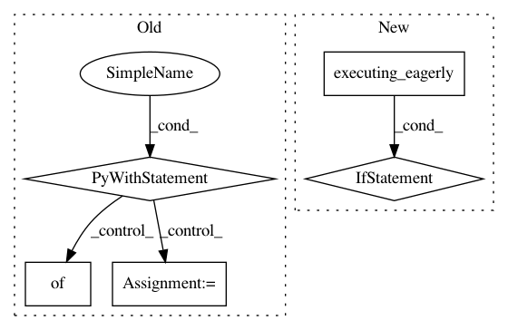

b68db1aaf6abe4d2cea8321cc6f1564228dd60f5,deepchem/models/tensorgraph/models/seqtoseq.py,SeqToSeq,predict_from_embeddings,#SeqToSeq#Any#Any#,254
Before Change
the beam width to use for searching. Set to 1 to use a simple greedy search.
result = []
with self._get_tf("Graph").as_default():
for batch in self._batch_elements(embeddings):
embedding_array = np.zeros(
(self.batch_size, self._embedding_dimension), dtype=np.float32)
for i, e in enumerate(batch):
embedding_array[i] = e
feed_dict = {}
feed_dict[self.embedding] = embedding_array
feed_dict[self._training_placeholder] = 0.0
for initial, zero in zip(self.rnn_initial_states, self.rnn_zero_states):
feed_dict[initial] = zero
probs = self.session.run(self.output, feed_dict=feed_dict)
for i in range(len(batch)):
result.append(self._beam_search(probs[i], beam_width))
return result
def predict_embeddings(self, sequences):
Given a set of input sequences, compute the embedding vectors.
After Change
for i, e in enumerate(batch):
embedding_array[i] = e
probs = self.decoder(embedding_array, training=False)
if tf.executing_eagerly():
probs = probs.numpy()
else:
probs = probs.eval(session=self.session)
for i in range(len(batch)):
result.append(self._beam_search(probs[i], beam_width))
return result
In pattern: SUPERPATTERN
Frequency: 3
Non-data size: 5
Instances
Project Name: deepchem/deepchem
Commit Name: b68db1aaf6abe4d2cea8321cc6f1564228dd60f5
Time: 2019-05-31
Author: peastman@stanford.edu
File Name: deepchem/models/tensorgraph/models/seqtoseq.py
Class Name: SeqToSeq
Method Name: predict_from_embeddings
Project Name: deepmind/sonnet
Commit Name: e61955b5553d98b4346817e0e9161f79fb23a40c
Time: 2018-07-17
Author: tomhennigan@google.com
File Name: sonnet/python/modules/nets/mlp_test.py
Class Name: MLPTest
Method Name: testTranspose
Project Name: deepmind/sonnet
Commit Name: 7a8f633761ebd75eba8abd8da4eaffe99bb753a2
Time: 2018-07-17
Author: tomhennigan@google.com
File Name: sonnet/python/modules/basic_test.py
Class Name: AddBiasTest
Method Name: testComputation